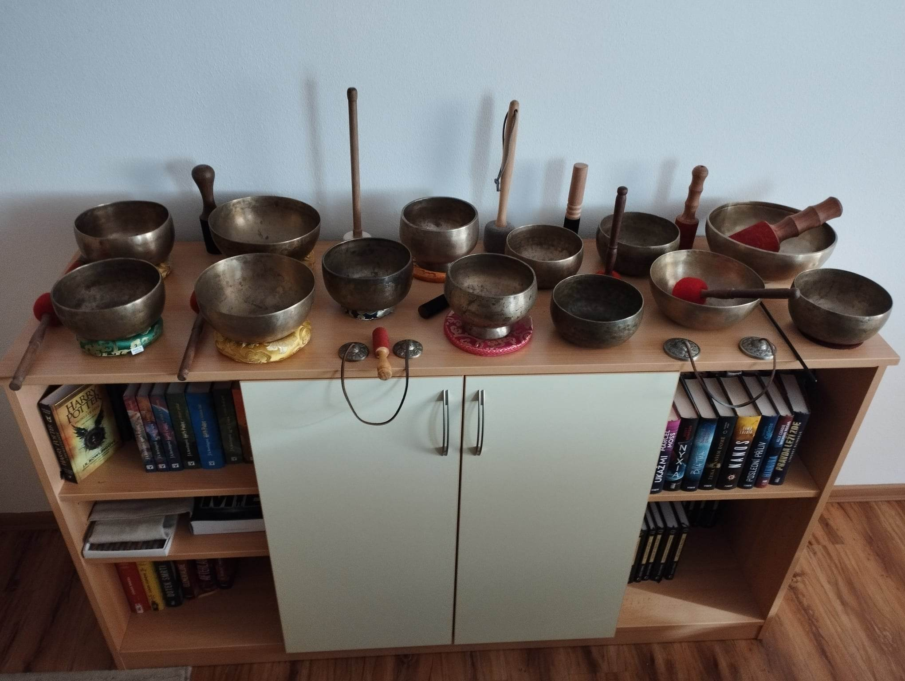

Tibetské mísy
Tibetská mísa nebo také zpívající mísa je tradiční ozvučný lidový nástroj, který pochází z Nepálu a byl používán pro náboženské účely už v polovině 3. tisíciletí př. n. l., ale také k léčení neduhů těla a mysli ale i k různým meditacím.
Tyto nástroje se staly velice oblíbenými u hudebních terapeutů a léčitelů, učitelů jógy a meditačních praktiků.
Misky se vyznačující krásným a čistým zvukem plným bohatých rezonancí. Každá z nich je originál svým tvarem i zvukem, každá má své unikátní kouzlo.
